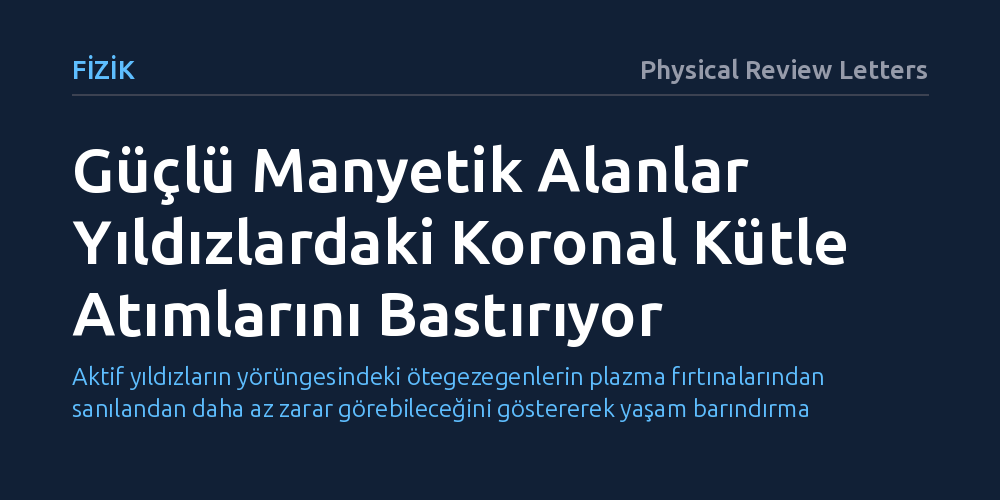

FIZIK · Physical Review Letters · 2026-09-08
Araştırmacılar, yüksek güçlü lazerlerle laboratuvarda ürettikleri manyetize plazmaları inceleyerek yıldızlardaki koronal kütle atımı süreçlerini araştırdı. Deneyler, güçlü yıldız manyetik alanlarının bu devasa plazma püskürmelerini baskılayarak uzaya fırlatılmasını engellediğini gösterdi.
Aktif yıldızların yörüngesindeki ötegezegenlerin plazma fırtınalarından sanılandan daha az zarar görebileceğini göstererek yaşam barındırma potansiyellerine bakışımızı güncelliyor.

Güneş ve evrendeki diğer yıldızlar, taç kürelerinden uzay boşluğuna milyarlarca tonluk plazmayı saatte milyonlarca kilometre hızla fırlatan devasa patlamalar üretir; bu olaylar koronal kütle atımı olarak adlandırılır. Kendi Güneş'imizde bu fırtınalar doğrudan gözlemlenebilmektedir. Ancak Güneş'ten çok daha aktif olan ve yüzeylerinde binlerce kat güçlü manyetik alanlar barındıran genç veya cüce yıldızlarda durum uzun süredir bir muammaydı. Gözlemlerde, bu yıldızların sergilediği şiddetli manyetik aktiviteye rağmen beklenen sıklıkta devasa kütle atımı tespit edilememesi bilim insanlarını düşündürüyordu.
Bu sorunun yanıtı yalnızca yıldız fiziği açısından değil, o yıldızların yörüngesindeki gezegenlerin kaderi açısından da belirleyicidir. Eğer bir yıldız çevresine durmaksızın yıkıcı plazma fırtınaları saçıyorsa, yakınındaki ötegezegenlerin atmosferleri zamanla süpürülüp yok olabilir ve yaşamın gelişimi imkânsız hale gelebilir. Dolayısıyla yıldızın kendi manyetik alanının bu patlamaları serbest mi bıraktığı yoksa hapsettiği mi sorusu, yaşama elverişli dünyaları ararken kritik bir öneme sahiptir.
Işık yılları uzaklıktaki aktif bir yıldızın atmosferindeki plazma dinamiklerini yerinde incelemek bugünkü teknolojimizle mümkün değildir. Bu zorluğu aşmak isteyen uluslararası bir araştırma ekibi, astrofiziksel süreçleri yeryüzüne taşımak amacıyla laboratuvar astrofiziği yöntemine başvurdu. Çalışmada, yüksek güçlü lazer darbeleri kullanılarak katı hedefler buharlaştırıldı ve yıldız atmosferlerindekine benzer yoğunluk ve sıcaklıkta plazma bulutları üretildi.
Elde edilen bu plazma daha sonra son derece güçlü harici manyetik alanların etkisi altına sokuldu. Manyetohidrodinamik ölçekleme yasaları sayesinde, mikrosaniyenin milyarda biri gibi kısa sürelerde ve milimetrik boyutlarda gerçekleşen bu lazer deneyi, gerçek bir yıldızın devasa boyutlarında saatler süren patlama dinamiklerini laboratuvar ortamında adım adım modellemeyi sağladı.
Laboratuvar deneylerinden elde edilen veriler, manyetik alan şiddetinin koronal kütle atımları üzerinde belirleyici bir eşik oluşturduğunu ortaya koydu. Manyetik alanın zayıf olduğu koşullarda plazma rahatça ivmelenip dışarı doğru fırlayabilirken, manyetik alan gücü belirli bir seviyenin üzerine çıktığında plazmanın kopup uzaya kaçmasının güçlü biçimde baskılandığı belirlendi.
Güçlü manyetik kuvvet hatları, plazmanın üzerinde adeta görünmez bir manyetik kafes işlevi görerek fışkıran maddeyi yakalıyor ve yıldız yüzeyine geri yönlendiriyor. Bu deneysel kanıt, manyetik açıdan son derece hırçın yıldızlarda beklenen plazma fırtınalarının neden uzay boşluğuna yayılamadığını net bir fiziksel mekanizmayla açıklıyor.
Elde edilen sonuçlar, özellikle galaksimizde en yaygın bulunan kırmızı cüce yıldızların etrafındaki yaşam olasılığı tartışmalarına yeni bir boyut kazandırıyor. Daha önce astronomlar, bu yıldızların yayacağı öngörülen kontrolsüz koronal kütle atımlarının yakın yörüngedeki karasal gezegenleri tümüyle yaşamsız bırakacağını varsayıyordu.
Yıldızın kendi güçlü manyetik alanının bu ölümcül patlamaları sınırlandırabildiğinin gösterilmesi, söz konusu gezegenlerin sanıldığı kadar yoğun ve sürekli bir plazma bombardımanına maruz kalmayabileceğini gösteriyor. Bir laboratuvar deneyinin gerçek uzay koşullarını tamamen birebir karşılayamayacağı unutulmamalıdır; yine de bu bulgu, evrendeki gezegenlerin atmosferlerini ve yaşanabilirliklerini değerlendirirken manyetik bastırma etkisinin hesaba katılması gerektiğini ortaya koyuyor.